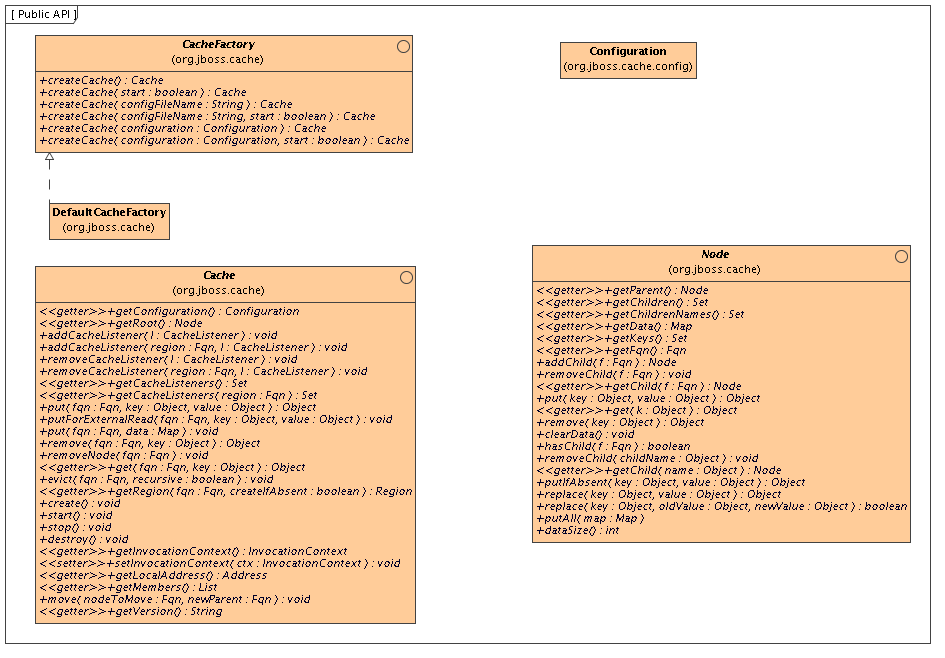

The
Cache interface is the primary mechanism for interacting with JBoss Cache. It is constructed and optionally started using the
CacheFactory. The
CacheFactory allows you to create a
Cache either from a
Configuration object or an XML file. The cache organizes data into a tree structure, made up of nodes. Once you have a reference to a
Cache, you can use it to look up
Node objects in the tree structure, and store data in the tree.

Note that the diagram above only depicts some of the more popular API methods. Reviewing the Javadoc for the above interfaces is the best way to learn the API. Below, we cover some of the main points.
2.2. Instantiating and Starting the Cache
An instance of the Cache interface can only be created via a CacheFactory. This is unlike JBoss Cache 1.x, where an instance of the old TreeCache class could be directly instantiated.
The
CacheFactory provides a number of overloaded methods for creating a
Cache, but they all fundamentally do the same thing:
Here is an example of the simplest mechanism for creating and starting a cache, using the default configuration values:
CacheFactory factory = new DefaultCacheFactory();
Cache cache = factory.createCache();
In this example, we tell the CacheFactory to find and parse a configuration file on the classpath:
CacheFactory factory = new DefaultCacheFactory();
Cache cache = factory.createCache("cache-configuration.xml");
In this example, we configure the cache from a file, but want to programmatically change a configuration element. So, we tell the factory not to start the cache, and instead do it ourselves:
CacheFactory factory = new DefaultCacheFactory();
Cache cache = factory.createCache("/opt/configurations/cache-configuration.xml", false);
Configuration config = cache.getConfiguration();
config.setClusterName(this.getClusterName());
// Have to create and start cache before using it
cache.create();
cache.start();
2.3. Caching and Retrieving Data
Next, lets use the Cache API to access a Node in the cache and then do some simple reads and writes to that node.
// Let us get a hold of the root node.
Node rootNode = cache.getRoot();
// Remember, JBoss Cache stores data in a tree structure.
// All nodes in the tree structure are identified by Fqn objects.
Fqn peterGriffinFqn = Fqn.fromString("/griffin/peter");
// Create a new Node
Node peterGriffin = rootNode.addChild(peterGriffinFqn);
// let us store some data in the node
peterGriffin.put("isCartoonCharacter", Boolean.TRUE);
peterGriffin.put("favoriteDrink", new Beer());
// some tests (just assume this code is in a JUnit test case)
assertTrue(peterGriffin.get("isCartoonCharacter"));
assertEquals(peterGriffinFqn, peterGriffin.getFqn());
assertTrue(rootNode.hasChild(peterGriffinFqn));
Set keys = new HashSet();
keys.add("isCartoonCharacter");
keys.add("favoriteDrink");
assertEquals(keys, peterGriffin.getKeys());
// let us remove some data from the node
peterGriffin.remove("favoriteDrink");
assertNull(peterGriffin.get("favoriteDrink");
// let us remove the node altogether
rootNode.removeChild(peterGriffinFqn);
assertFalse(rootNode.hasChild(peterGriffinFqn));
Fqn peterGriffinFqn = Fqn.fromString("/griffin/peter");
cache.put(peterGriffinFqn, "isCartoonCharacter", Boolean.TRUE);
cache.put(peterGriffinFqn, "favoriteDrink", new Beer());
assertTrue(peterGriffin.get(peterGriffinFqn, "isCartoonCharacter"));
assertTrue(cache.getRootNode().hasChild(peterGriffinFqn));
cache.remove(peterGriffinFqn, "favoriteDrink");
assertNull(cache.get(peterGriffinFqn, "favoriteDrink");
cache.removeNode(peterGriffinFqn);
assertFalse(cache.getRootNode().hasChild(peterGriffinFqn));
2.3.1. Organizing Your Data and Using the Node Structure
A Node should be viewed as a named logical grouping of data. A node should be used to contain data for a single data record, for example information about a particular person or account. It should be kept in mind that all aspects of the cache - locking, cache loading, replication and eviction - happen on a per-node basis. As such, anything grouped together by being stored in a single node will be treated as a single atomic unit.
The previous section used the Fqn class in its examples; now let us learn a bit more about that class.
A Fully Qualified Name (Fqn) encapsulates a list of names which represent a path to a particular location in the cache's tree structure. The elements in the list are typically Strings but can be any Object or a mix of different types.
This path can be absolute (i.e., relative to the root node), or relative to any node in the cache. Reading the documentation on each API call that makes use of Fqn will tell you whether the API expects a relative or absolute Fqn.
The Fqn class provides are variety of factory methods; see the Javadoc for all the possibilities. The following illustrates the most commonly used approaches to creating an Fqn:
// Create an Fqn pointing to node 'Joe' under parent node 'Smith'
// under the 'people' section of the tree
// Parse it from a String
Fqn abc = Fqn.fromString("/people/Smith/Joe/");
// Here we want to use types other than String
Fqn acctFqn = Fqn.fromElements("accounts", "NY", new Integer(12345));
Note that
Fqn f = Fqn.fromElements("a", "b", "c");
is the same as
Fqn f = Fqn.fromString("/a/b/c");
2.5. Stopping and Destroying the Cache
It is good practice to stop and destroy your cache when you are done using it, particularly if it is a clustered cache and has thus used a JGroups channel. Stopping and destroying a cache ensures resources like network sockets and maintenance threads are properly cleaned up.
cache.stop();
cache.destroy();
Not also that a cache that has had stop() invoked on it can be started again with a new call to start() . Similarly, a cache that has had destroy() invoked on it can be created again with a new call to create() (and then started again with a start() call).
Although technically not part of the API, the mode in which the cache is configured to operate affects the cluster-wide behavior of any put or remove operation, so we will briefly mention the various modes here.
JBoss Cache modes are denoted by the
org.jboss.cache.config.Configuration.CacheMode enumeration. They consist of:
LOCAL - local, non-clustered cache. Local caches do not join a cluster and do not communicate with other caches in a cluster.
REPL_SYNC - synchronous replication. Replicated caches replicate all changes to the other caches in the cluster. Synchronous replication means that changes are replicated and the caller blocks until replication acknowledgements are received.
REPL_ASYNC - asynchronous replication. Similar to REPL_SYNC above, replicated caches replicate all changes to the other caches in the cluster. Being asynchronous, the caller does not block until replication acknowledgements are received.
INVALIDATION_SYNC - if a cache is configured for invalidation rather than replication, every time data is changed in a cache other caches in the cluster receive a message informing them that their data is now stale and should be evicted from memory. This reduces replication overhead while still being able to invalidate stale data on remote caches.
INVALIDATION_ASYNC - as above, except this invalidation mode causes invalidation messages to be broadcast asynchronously.
2.7. Adding a Cache Listener - registering for cache events
JBoss Cache provides a convenient mechanism for registering notifications on cache events.
Object myListener = new MyCacheListener();
cache.addCacheListener(myListener);
Similar methods exist for removing or querying registered listeners. See the Javadocs on the Cache interface for more details.
Basically any public class can be used as a listener, provided it is annotated with the
@CacheListener annotation. In addition, the class needs to have one or more methods annotated with one of the method-level annotations (in the
org.jboss.cache.notifications.annotation package). Methods annotated as such need to be public, have a void return type, and accept a single parameter of type
org.jboss.cache.notifications.event.Event or one of its subtypes.
@CacheStarted - methods annotated such receive a notification when the cache is started. Methods need to accept a parameter type which is assignable from CacheStartedEvent .
@CacheStopped - methods annotated such receive a notification when the cache is stopped. Methods need to accept a parameter type which is assignable from CacheStoppedEvent .
@NodeCreated - methods annotated such receive a notification when a node is created. Methods need to accept a parameter type which is assignable from NodeCreatedEvent .
@NodeRemoved - methods annotated such receive a notification when a node is removed. Methods need to accept a parameter type which is assignable from NodeRemovedEvent .
@NodeModified - methods annotated such receive a notification when a node is modified. Methods need to accept a parameter type which is assignable from NodeModifiedEvent .
@NodeMoved - methods annotated such receive a notification when a node is moved. Methods need to accept a parameter type which is assignable from NodeMovedEvent .
@NodeVisited - methods annotated such receive a notification when a node is started. Methods need to accept a parameter type which is assignable from NodeVisitedEvent .
@NodeLoaded - methods annotated such receive a notification when a node is loaded from a CacheLoader . Methods need to accept a parameter type which is assignable from NodeLoadedEvent .
@NodeEvicted - methods annotated such receive a notification when a node is evicted from memory. Methods need to accept a parameter type which is assignable from NodeEvictedEvent .
@NodeInvalidated - methods annotated such receive a notification when a node is evicted from memory due to a remote invalidation event. Methods need to accept a parameter type which is assignable from NodeInvalidatedEvent .
@NodeActivated - methods annotated such receive a notification when a node is activated. Methods need to accept a parameter type which is assignable from NodeActivatedEvent .
@NodePassivated - methods annotated such receive a notification when a node is passivated. Methods need to accept a parameter type which is assignable from NodePassivatedEvent .
@TransactionRegistered - methods annotated such receive a notification when the cache registers a javax.transaction.Synchronization with a registered transaction manager. Methods need to accept a parameter type which is assignable from TransactionRegisteredEvent .
@TransactionCompleted - methods annotated such receive a notification when the cache receives a commit or rollback call from a registered transaction manager. Methods need to accept a parameter type which is assignable from TransactionCompletedEvent .
@ViewChanged - methods annotated such receive a notification when the group structure of the cluster changes. Methods need to accept a parameter type which is assignable from ViewChangedEvent .
@CacheBlocked - methods annotated such receive a notification when the cluster requests that cache operations are blocked for a state transfer event. Methods need to accept a parameter type which is assignable from CacheBlockedEvent .
@CacheUnblocked - methods annotated such receive a notification when the cluster requests that cache operations are unblocked after a state transfer event. Methods need to accept a parameter type which is assignable from CacheUnblockedEvent .
@BuddyGroupChanged - methods annotated such receive a notification when a node changes its buddy group, perhaps due to a buddy falling out of the cluster or a newer, closer buddy joining. Methods need to accept a parameter type which is assignable from BuddyGroupChangedEvent.
Refer to the Javadocs on the annotations as well as the Event subtypes for details of what is passed in to your method, and when.
Example:
@CacheListener
public class MyListener
{
@CacheStarted
@CacheStopped
public void cacheStartStopEvent(Event e)
{
switch (e.getType())
{
case CACHE_STARTED:
System.out.println("Cache has started");
break;
case CACHE_STOPPED:
System.out.println("Cache has stopped");
break;
}
}
@NodeCreated
@NodeRemoved
@NodeVisited
@NodeModified
@NodeMoved
public void logNodeEvent(NodeEvent ne)
{
log("An event on node " + ne.getFqn() + " has occured");
}
}
2.7.1. Synchronous and Asynchronous Notifications
By default, all notifications are synchronous, in that they happen on the thread of the caller which generated the event. As such, it is good practice to ensure cache listener implementations do not hold up the thread in long-running tasks. Alternatively, you could set the
CacheListener.sync attribute to
false, in which case you will not be notified in the caller's thread. See the
Table 12.13, “The <listeners /> Element” on tuning this thread pool and size of blocking queue.
2.8. Using Cache Loaders
Cache loaders are an important part of JBoss Cache. They allow persistence of nodes to disk or to remote cache clusters, and allow for passivation when caches run out of memory. In addition, cache loaders allow JBoss Cache to perform 'warm starts', where in-memory state can be preloaded from persistent storage. JBoss Cache ships with a number of cache loader implementations.
org.jboss.cache.loader.FileCacheLoader - a basic, file system based cache loader that persists data to disk. Non-transactional and not very performant, but a very simple solution. Used mainly for testing and not recommended for production use.
org.jboss.cache.loader.JDBCCacheLoader - uses a JDBC connection to store data. Connections could be created and maintained in an internal pool (uses the c3p0 pooling library) or from a configured DataSource. The database this CacheLoader connects to could be local or remotely located.
org.jboss.cache.loader.BdbjeCacheLoader - uses Oracle's BerkeleyDB file-based transactional database to persist data. Transactional and very performant, but potentially restrictive license.
org.jboss.cache.loader.JdbmCacheLoader - an open source alternative to the BerkeleyDB.
org.jboss.cache.loader.tcp.TcpCacheLoader - uses a TCP socket to "persist" data to a remote cluster, using
a "far cache" pattern.
org.jboss.cache.loader.ClusteredCacheLoader - used as a "read-only" cache loader, where other nodes in the cluster are queried for state. Useful when full state transfer is too expensive and it is preferred that state is lazily loaded.
These cache loaders, along with advanced aspects and tuning issues, are discussed in the
Chapter 9, Cache Loaders.
2.9. Using Eviction Policies
Eviction policies are the counterpart to cache loaders. They are necessary to make sure the cache does not run out of memory and when the cache starts to fill, an eviction algorithm running in a separate thread evicts in-memory state and frees up memory. If configured with a cache loader, the state can then be retrieved from the cache loader if needed.
Eviction policies can be configured on a per-region basis, so different subtrees in the cache could have different eviction preferences. JBoss Cache ships with several eviction policies:
org.jboss.cache.eviction.LRUPolicy - an eviction policy that evicts the least recently used nodes when thresholds are hit.
org.jboss.cache.eviction.LFUPolicy - an eviction policy that evicts the least frequently used nodes when thresholds are hit.
org.jboss.cache.eviction.MRUPolicy - an eviction policy that evicts the most recently used nodes when thresholds are hit.
org.jboss.cache.eviction.FIFOPolicy - an eviction policy that creates a first-in-first-out queue and evicts the oldest nodes when thresholds are hit.
org.jboss.cache.eviction.ExpirationPolicy - an eviction policy that selects nodes for eviction based on an expiry time each node is configured with.
org.jboss.cache.eviction.ElementSizePolicy - an eviction policy that selects nodes for eviction based on the number of key/value pairs held in the node.
Detailed configuration and implementing custom eviction policies are discussed in the
Chapter 10, Eviction.